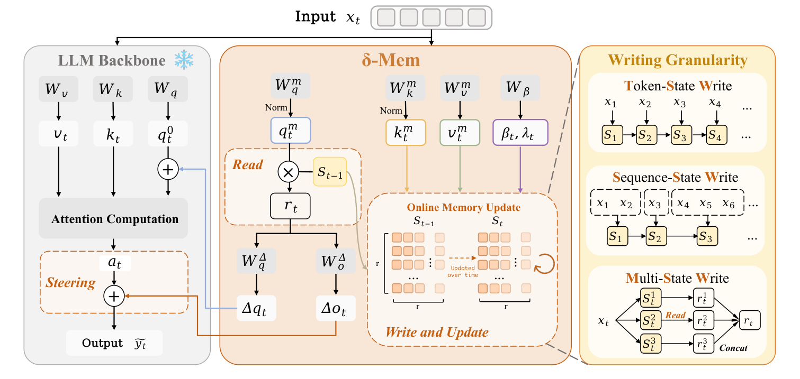
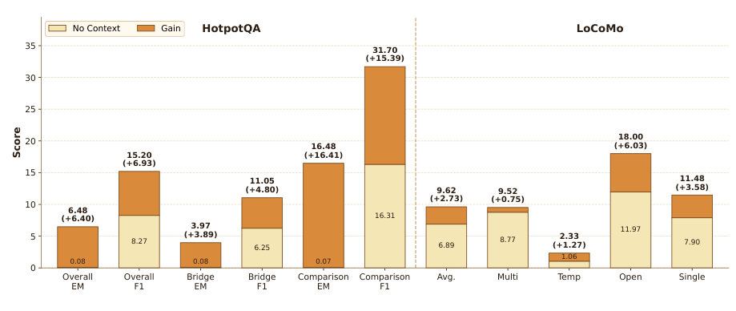
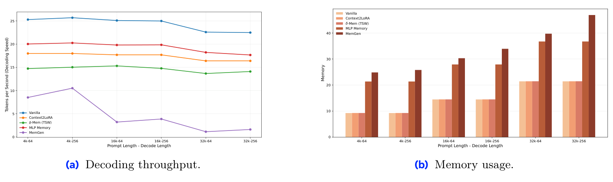
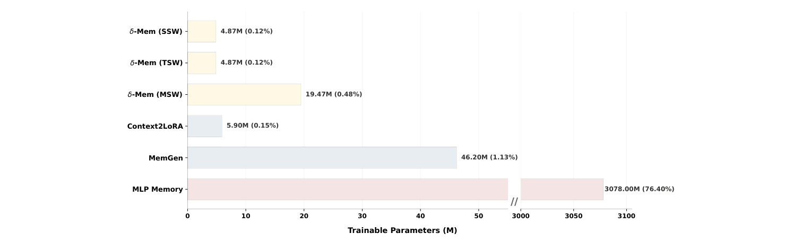

记忆问题不是上下文问题
先建立一个直觉。你把一位朋友十年的聊天记录全部塞进一个房间里，然后要求他在三秒内回答"我上次说想看什么电影？"——房间越大，找得越慢，而且实验反复表明：房间大到一定程度后，他反而开始答错。这就是 LLM 长期记忆的现状。
论文的开篇论证链条非常清晰，值得逐环拆开：
- 需求侧：长期个性化助手与长程 agent 系统的生命周期不再是"一问一答"，而是持续地积累、更新、复用历史信息。
- 朴素方案的代价一：把历史全部放进上下文 → 标准注意力对上下文长度是二次复杂度，32K 提示的开销已经可观，百万 token 更是天文数字。
- 朴素方案的代价二：更隐蔽也更致命——context rot（上下文腐烂）。即使检索完美，上下文变长本身就会拉低模型表现。模型"看得到"不等于"用得上"。
- 推论：百万 token 上下文窗口原则上不解决记忆问题。需要的是一种机制：在给定上下文窗口内更紧凑地表示历史、跨交互动态维护它、并在测试时真正被骨干用上。
"记忆"与"检索"是两回事：本文的问题定义决定了全部设计
把记忆问题还原为长上下文问题，等于假设"信息只要在视野里就能被利用"；而 context rot 的证据否定了这个假设。δ-mem 因此把问题重新定义为：如何维护一个与注意力计算直接耦合的、常数大小的历史摘要状态。注意这个定义里的三个关键词——常数大小（对抗二次复杂度）、动态维护（对抗静态参数的僵化）、直接耦合注意力（对抗检索噪声与融合错位）。后文所有设计选择都能回溯到这三个词。
δ-mem 是什么：先有画面，再有公式
在进入数学之前，先用一句话说清 δ-mem 是什么：它是一个挂在冻结大模型旁边的"小笔记本"，笔记本只有 8×8=64 个格子，每个格子存一个浮点数。模型每处理一个 token，就先翻一下笔记本（读），用笔记本里的内容微调自己的注意力（引导），然后把当前 token 的关键信息写进笔记本（写）。笔记本跨对话持续保留，越写越"懂"用户。
这个"小笔记本"在论文里叫做在线联想记忆状态，用矩阵 $S$ 表示，尺寸固定为 $r \times r$（实验中 $r=8$，所以是 8×8）。它的三个核心操作对应笔记本的三个动作：
① 读（READ）
用当前 token 的"记忆查询"去乘状态矩阵 $S$，得到一个"记忆信号" $r_t$。就像翻笔记本找相关内容。
成本：$O(r^2)$，与历史长度无关
② 引导（STEER）
把记忆信号 $r_t$ 通过两个小线性层变成"查询修正量" $\Delta q_t$ 和"输出修正量" $\Delta o_t$，加进冻结骨干的注意力计算。就像笔记本内容影响了你怎么看问题、怎么回答。
形式类似 LoRA，但输入是动态状态
③ 写（WRITE）
用 delta rule 把当前 token 的"键"和"值"写进状态 $S$。核心是"只写没记住的部分"——已经知道的几乎不动，不知道的才更新。就像笔记本只记新东西，不重复抄旧内容。
带遗忘门 $\lambda$ 和写入门 $\beta$
接下来的章节会逐步拆解这三个操作的数学细节。但请记住这张画面：一个 8×8 的小笔记本，每 token 读一次、引导一次、写一次，跨对话持续演化。所有公式都是在精确描述这三个动作。
它在记忆方法全景中的位置
为了理解 δ-mem 的独特性，可以用两个维度给所有记忆方法分类：
- 记忆状态（history 以什么形式存储）：文本？潜向量？参数？
- 记忆引导（存储的信息通过什么路径影响骨干推理）：拼进输入？外挂通道？改写权重？还是直接参与注意力计算？
简单说：文本记忆（RAG 等）把历史当文本拼进上下文，受上下文窗口限制；外通道记忆（LongMem 等）把历史编码成潜向量但通过旁路融合，容易和骨干表征错位；参数记忆（LoRA 等）把历史写进权重但训练后静态，无法随交互演化；δ-mem把历史压缩成一个在线更新的小矩阵，并直接修改注意力的查询和输出——既常数大小、又动态更新、又和骨干计算对齐。
delta rule：让矩阵学会"记住"键值对
δ-mem 的核心更新规则叫做 delta rule（也叫 Widrow-Hoff LMS 规则，1960 年提出）。它不是这篇论文发明的，但论文把它用在了一个新地方——作为在线记忆状态的写入规则。在推导公式之前，先理解它要解决什么问题。
问题：怎样让一个矩阵"记住"键值关联？
假设我们有一个矩阵 $S$（就是那个 8×8 笔记本），我们想让它记住一组关联："当看到键 $k$ 时，输出值 $v$"。也就是说，我们希望 $S \times k \approx v$。
最朴素的想法是直接把外积 $v k^\top$ 加进 $S$：$S \leftarrow S + v k^\top$。但这有个致命问题：如果键之间不完全正交，新旧关联会互相干扰（串扰），记的越多越乱。delta rule 的解决思路是：不要直接写新值，而是只写"预测误差"。
读取：用键查值
设当前时刻为 $t$，旧状态为 $S_{t-1}$。当前输入的"记忆键"为 $k_t$（一个 8 维向量），"记忆值"为 $v_t$（也是 8 维向量）。旧状态对当前键的预测（也就是"笔记本里关于这个键已经记了什么"）为：
式 (1)：联想记忆的读取即预测
$$\hat{v}_t = S_{t-1} k_t$$把 $S$ 看作一个线性联想记忆矩阵：用键 $k$ 去"乘"它，读出对应的值。这是 Hopfield/Kohonen 式联想记忆的最简形式。$\hat{v}_t$ 读作"v hat t"，表示旧状态对值 $v_t$ 的预测。
写入：只更新"没记住的部分"
预测值 $\hat{v}_t$ 和真实值 $v_t$ 之间的差距叫做预测误差（prediction error）或残差（residual）：$v_t - \hat{v}_t$。delta rule 的写入量正比于这个残差：
式 (2)：delta rule = 只写"没记住的"
$$\mathcal{L}_t(S) = \tfrac{1}{2}\|S k_t - v_t\|^2,\qquad S_t = S_{t-1} + \beta_t (v_t - S_{t-1} k_t) k_t^\top$$左边是损失函数（预测值与真实值的平方误差，系数 $\tfrac{1}{2}$ 是为了求导后消掉）。右边是对损失做一步梯度下降的结果。$\beta_t$ 是学习率（写入强度），$k_t^\top$ 是 $k_t$ 的转置（行向量），$(v_t - \hat{v}_t) k_t^\top$ 是外积，结果是一个 8×8 矩阵。
这个公式的直觉非常重要：
- 如果旧状态已经能准确预测 $v_t$（$\hat{v}_t \approx v_t$），残差接近零，几乎不更新——已经记住的东西不需要重复写。
- 如果旧状态预测错了（残差大），更新量也大——只修正没记住的部分。
- 更新量是残差乘以键的外积，这意味着只在键 $k_t$ 指向的方向上修改状态，不会干扰其他键方向上的记忆。
加入遗忘门：gated delta rule
原始 delta rule 没有遗忘机制——旧记忆会一直保留。δ-mem 加入了一个遗忘门 $\lambda_t$（0 到 1 之间的向量，逐维控制），在写入新内容前先按比例衰减旧状态：
式 (3)：gated delta update
$$S_t = \lambda_t S_{t-1} + \beta_t (v_t - S_{t-1} k_t) k_t^\top$$$\lambda_t$ 控制保留多少旧记忆（$\lambda=1$ 完全保留，$\lambda=0$ 完全遗忘），$\beta_t$ 控制残差写入强度。注意 $\lambda_t$ 和 $\beta_t$ 都是 8 维向量（逐维门控），不是标量——每个记忆维度可以独立决定"多保留旧的"还是"多写新的"。
delta rule 的信息论读法：写入的是"意外"，不是数据
把式 (2) 与通信类比：信道只传输预测残差。若历史高度可预测（重复、套话、格式符），残差趋近零，状态几乎不动——记忆带宽自动分配给"信息量大的意外"。这解释了为什么 8×8 这么小却够用：状态不需要存储历史本身，只需要存储历史中不可预测的部分的压缩痕迹。
总架构：读 → 引导 → 写的单步循环
有了 delta rule 的数学基础，现在看 δ-mem 如何挂接到一个冻结的 Transformer 上。每个位置（token）的计算顺序固定为三步：从旧状态读 → 用读出信号引导注意力 → 把当前信息写进状态。

符号清单：这篇博客用到的所有记号
为了避免后续混淆，这里一次性列出所有符号及其含义。上标 $^m$ 表示"memory（记忆侧）"，用来和骨干注意力的 $q, k, v$ 区分。
| 符号 | 含义 | 维度 |
|---|---|---|
| $x_t$ | 冻结骨干第 $t$ 个位置的隐藏状态（hidden state） | $d$ 维 |
| $S_t$ | 在线联想记忆状态矩阵（"笔记本"），$t$ 时刻写入后的状态 | $r \times r$（8×8） |
| $q^m_t$ | 记忆查询（memory query）：从 $x_t$ 投影得到，用来从 $S$ 中读取 | $r$ 维（8维） |
| $k^m_t$ | 记忆键（memory key）：从 $x_t$ 投影得到，写入时用来定位"写在哪个方向" | $r$ 维（8维） |
| $v^m_t$ | 记忆值（memory value）：从 $x_t$ 投影得到，写入时的"内容" | $r$ 维（8维） |
| $r_t$ | 记忆信号（readout）：读取结果，$r_t = S_{t-1} q^m_t$ | $r$ 维（8维） |
| $\beta_t$ | 写入门（write gate）：控制残差写入强度，逐维 | $r$ 维（8维） |
| $\lambda_t$ | 遗忘门（forget gate）：控制旧状态保留比例，$\lambda_t = 1 - \beta_t$ | $r$ 维（8维） |
| $\Delta q_t$ | 查询修正量：从 $r_t$ 投影得到，加在骨干注意力的查询上 | $d$ 维 |
| $\Delta o_t$ | 输出修正量：从 $r_t$ 投影得到，加在骨干注意力的输出上 | $d$ 维 |
| $q^0_t$ | 骨干原始查询（frozen backbone 的 query projection 输出） | $d$ 维 |
| $\tilde{q}_t$ | 修正后的查询：$\tilde{q}_t = q^0_t + \frac{\alpha}{r}\Delta q_t$ | $d$ 维 |
| $a_t$ | 骨干注意力输出 | $d$ 维 |
| $\tilde{y}_t$ | 修正后的输出：$\tilde{y}_t = a_t + \frac{\alpha}{r}\Delta o_t$ | $d$ 维 |
| $\alpha$ | 引导缩放系数（实验取 16），$\alpha/r$ 是 LoRA 式缩放 | 标量 |
| $r$ | 记忆维度（rank，实验取 8），决定状态大小 $r \times r$ | 标量 |
| $d$ | 骨干隐藏维度（hidden size，如 Qwen3-4B 为 2560） | 标量 |
有了这张符号表，后续章节的公式就不会再"每个字母都要猜"了。下面逐章拆解每个组件。
投影与门控：如何把隐藏状态变成记忆的"语言"
δ-mem 的状态 $S$ 是 8×8 的，但骨干的隐藏状态 $x_t$ 是 2560 维（以 Qwen3-4B 为例）。需要一个"翻译器"把高维的 $x_t$ 变成低维的记忆键/值/查询。这个翻译器就是三个线性投影层。
三投影：把隐藏状态压缩成记忆的键、值、查询
式 (4)：三投影
$$q^m_t = \mathrm{L2norm}\big(\tanh(W^m_q x_t)\big),\quad k^m_t = \mathrm{L2norm}\big(\tanh(W^m_k x_t)\big),\quad v^m_t = W^m_v x_t$$$W^m_q, W^m_k, W^m_v$ 是三个可学习的线性投影矩阵，把 $d$ 维的 $x_t$ 映射到 $r$ 维。注意：只有 $q^m$ 和 $k^m$ 经过 tanh 激活 + L2 归一化，$v^m$ 是裸线性（无激活、无归一化）。
为什么 q、k 要归一化而 v 不用？这是一个精心的设计选择。展开说：
- $k^m$ 参与写入时的外积 $k k^\top$。如果 $\|k\|$ 随层/随时间漂移，写入强度会以 $\|k\|^2$ 的速度爆炸或消失。归一化把每次写入的"足迹大小"锁定为常数，保证状态演化稳定。
- $q^m$ 参与读取 $S q$，归一化保证读取信号的尺度不随输入变化而剧烈波动。
- $v^m$ 是被存储的内容，归一化会把内容的幅值信息（例如"这条信息更重要/更强烈"）抹掉——所以保留裸线性，让值的幅值携带信息。
互补门：每个维度持有一份"写入-保留"零和预算
式 (5)：互补门
$$\beta_t = \sigma(W_\beta x_t + b),\qquad \lambda_t = 1 - \beta_t$$$\sigma$ 是 sigmoid 函数，把输出压缩到 (0,1) 区间。$\beta_t, \lambda_t \in \mathbb{R}^r$ 是逐维向量门（8维），不是标量。$\lambda = 1 - \beta$ 意味着写入越强、保留越弱，两者此消彼长。
$\lambda = 1-\beta$：把稳定性-可塑性权衡下沉到维度级
互补约束意味着第 $i$ 维不能"既拼命写新东西又死死保住旧东西"——它必须在每一刻做取舍。这把 continual learning 里的稳定性-可塑性困境下沉到了维度级：8 个维度可以分工，例如 3 维高 $\beta$（追踪局部事件）、5 维低 $\beta$（保存长期偏好）。对比 Gated DeltaNet 中门与 delta 是独立学习的两个自由度，δ-mem 的互补设计是更强的先验、更少的参数——在只有 2219 个训练样本时，这种强先验很可能是对的。
读取与低秩引导：让记忆说骨干的语言
读取：从状态中取出记忆信号
读取操作非常简单——用记忆查询 $q^m_t$ 去乘旧状态矩阵 $S_{t-1}$：
式 (6)：读
$$r_t = S_{t-1} q^m_t$$$S_{t-1}$ 是 8×8，$q^m_t$ 是 8 维，结果 $r_t$ 是 8 维。本步计算成本为 $O(r^2)=O(64)$，与历史长度无关——这是与标准注意力 $O(Nd)$ 的根本区别。注意力在显式上下文里逐键比较，δ-mem 从压缩状态直接取连续联想信号。
引导：把记忆信号变成注意力的修正量
读取得到的 $r_t$ 是 8 维的"记忆信号"，但骨干注意力的查询和输出是 $d$ 维（如 2560 维）。需要两个线性层把 $r_t$ "翻译"成骨干能理解的修正量：
式 (7)-(9)：引导与修正后的注意力
$$\Delta q_t = W^\Delta_q r_t,\quad \Delta o_t = W^\Delta_o r_t$$$$q^0_t = W_Q x_t,\quad \tilde q_t = q^0_t + \tfrac{\alpha}{r}\Delta q_t$$$$a_t = \mathrm{Attn}(\tilde q_t, K_{\le t}, V_{\le t}),\quad \tilde y_t = a_t + \tfrac{\alpha}{r}\Delta o_t$$核对：缩放系数为 $\alpha/r$（LoRA 式缩放），实验取 $\alpha=16, r=8$ 即系数为 2。$W_Q$ 是冻结骨干的查询投影。注意 $\Delta o$ 加在注意力输出之后（不是加在 value 上）。
引导的作用有两个通道：
- 查询侧修正 $\Delta q$：改变"去哪找"——让当前查询在显式上下文中偏向与历史关联的方向。
- 输出侧修正 $\Delta o$：改变"找到之后怎么解读"——直接在表征空间加偏置。
与 LoRA 的本质区别：静态低秩 vs 状态条件化低秩
形式上 $\tilde q = q^0 + \frac{\alpha}{r} W^\Delta_q r_t$ 与 LoRA 的 $q^0 + \frac{\alpha}{r} B A x$ 几乎同构。但有关键差异：$W^\Delta$ 训练后固定，而它的输入 $r_t$ 来自动态状态 $S_{t-1}$。同一组参数在不同历史下产生不同引导——LoRA 的低秩更新是一个实例一个适配器的静态对象，δ-mem 的低秩修正是逐 token 流出的函数值。这就是"参数记忆"与"状态记忆"在数学形式最接近处的分水岭。
"默认无害"性质：没有相关记忆时几乎不干扰骨干
引导是加性低秩修正而非输入替换。当状态里没有相关联想（$r_t$ 的范数小）时，$\Delta q$ 和 $\Delta o$ 自动趋近零，骨干行为几乎不被扰动。这解释了实验中 δ-mem 在 IFEval（通用指令遵循）上不降反升（82.99 > 骨干 81.89）——而 Context2LoRA 掉到 76.71、MLP Memory 崩到 24.95。这是一条设计层面的"do-no-harm by construction"性质，值得所有记忆机制借鉴。
写入：gated delta rule 的"先擦后写"
写入是 δ-mem 最精妙的部分。把式 (3) 展开，可以看到更新由三项组成：
式 (10)-(11)：更新与三项分解
$$S_t = \mathrm{Diag}(\lambda_t) S_{t-1} + \mathrm{Diag}(\beta_t)\,(v^m_t - S_{t-1} k^m_t)(k^m_t)^\top$$$$S_t = \underbrace{\mathrm{Diag}(\lambda_t) S_{t-1}}_{\text{① 保留旧记忆}} - \underbrace{\mathrm{Diag}(\beta_t) S_{t-1} k^m_t (k^m_t)^\top}_{\text{② 沿当前键方向擦除旧预测}} + \underbrace{\mathrm{Diag}(\beta_t) v^m_t (k^m_t)^\top}_{\text{③ 写入新值}}$$三项各有明确职责：
- 保留（$\mathrm{Diag}(\lambda) S_{t-1}$）：按遗忘门 $\lambda$ 逐维衰减旧状态。$\lambda$ 大的维度多保留，$\lambda$ 小的维度多遗忘。
- 擦除（$-\mathrm{Diag}(\beta) S k k^\top$）：这是最容易被忽略、却最关键的一项。在写入新关联之前，先减去旧状态在当前键方向上的预测。若没有它，新旧外积直接叠加，状态会退化为外积和 $\sum v k^\top$，键之间一旦不正交就产生串扰（crosstalk）——这是经典联想记忆容量崩溃的根源。
- 写入（$\mathrm{Diag}(\beta) v k^\top$）：把新值 $v$ 沿键 $k$ 方向写入状态。
②+③ 合并后就是 $\beta(v - Sk)k^\top$，即"写入残差"。所以 delta rule 的本质是：先擦除旧预测，再写入新值，用"误差纠正"代替"无选择累加"，把串扰变成可收敛的残差动力学。
逐行展开：看见逐维门控
把矩阵更新按行展开（$s^{(i)}$ 是 $S$ 的第 $i$ 行），可以看到更精细的结构：
式 (12)：逐行展开
$$s^{(i)}_t = \lambda_{t,i}\, s^{(i)}_{t-1} + \beta_{t,i}\big(v^m_{t,i} - s^{(i)}_{t-1} k^m_t\big)(k^m_t)^\top$$$s^{(i)}$ 是 $S$ 的第 $i$ 行（对应值的第 $i$ 维）。每一行独立决定保留多少（$\lambda_{t,i}$）、写多狠（$\beta_{t,i}$）。所有行共享同一个键向量 $k^m_t$，但各自有独立的门控和值坐标。
把式 (12) 读成 8 个并行的标量联想记忆
逐行展开揭示了一个漂亮的结构：δ-mem 等价于 $r=8$ 个共享键向量 $k_t$、但各自拥有独立门控与独立值坐标 $v_{t,i}$ 的一维联想记忆的直和。这解释了 MSW（多状态）为何有效：当 8 行仍不够分工时，干脆复制出 4 份完整状态（$N=4$，第 8 章），把"事实/偏好/任务进度/局部事件"物理隔离。也可以预言：若键分布高度各向同性（所有方向差不多），逐维门控的收益会缩小——这是一个可检验的开放问题。
写入粒度：TSW / SSW / MSW 三档
单次写入的数学定了，还要定多久写一次、写进几个状态。论文考察三种策略：
TSW（Token-level Write）
逐 token 写入：每个位置都做一次 Update。状态链最细，信息保真度最高，但也最容易被格式符号、复读噪声污染。
SSW（Segment-level Write）
逐段写入：把序列分成若干段（segment），每段取隐藏状态均值后写一次。用平均做低通滤波，降噪但牺牲 token 级细节。
MSW（Multi-state Write）
多状态写入：维护 $N=4$ 个独立的 8×8 状态，同一 token 并行写入所有子状态，读取时把 4 个读出信号拼接。物理隔离干扰，但参数 ×4。
粒度是"信噪比旋钮"，最优档位由骨干容量决定
把写入看作向状态信道发送符号：TSW 符号率最高（信息保真）但噪声也最多（格式符、复读）；SSW 用平均做低通滤波（降噪但损细节）；MSW 不改变符号率而是扩信道（多路并行降干扰）。实验给出了一条可操作的启发式：骨干越强，记忆通道的瓶颈越在噪声侧（选 SSW）；骨干越弱，瓶颈越在容量/干扰侧（选 MSW）。这把"记忆设计"与"骨干能力"耦合成了一个联合设计问题。
训练：2219 个样本，教会模型"如何使用记忆"
δ-mem 的训练目标是标准的 SFT（监督微调）损失，但有一个关键设计：上下文 token 只被写入状态，不作为骨干输入回放。
式 (17)：标准 SFT 损失，但上下文不回放
$$\mathcal{L}_{\mathrm{SFT}} = -\sum_{j=1}^{|Y|} \log p_{\phi,\theta}(y_j \mid Q, y_{训练配置
| 配置项 | 值 | 解读 |
|---|---|---|
| 训练数据 | QASPER 最短 split，2,219 样本，1 epoch | 极端小的监督信号——学的不是知识，是"读写策略" |
| 骨干训练序列长 | 512 | 注意力侧只见短序列 |
| 记忆写入预算 | 8,192 token | 状态侧可消化 16× 于骨干视野的历史 |
| rank / α | r = 8，α = 16 | 状态 8×8；引导缩放系数 α/r = 2 |
| 注入分支 | 仅 query + output（qo） | 消融后的性价比选择（第 13 章） |
| MSW 状态数 | N = 4 | 参数量 4.87M → 19.47M |
| 硬件/优化 | 8×A800，bf16，ZeRO-2，fused AdamW；lr 2e-4 余弦，warmup 0.1；有效 batch 32；seed 42 | 常规 SFT 配方，无特殊技巧 |
512 vs 8192：训练时就把"看"与"记"解耦
骨干注意力在训练时最多看 512 token，而记忆写入预算是 8192 token——模型被迫学会只靠状态回答长历史问题，因为长历史根本进不了注意力视野。这是一个巧妙的课程：若两者同长，模型会偷懒走注意力捷径，状态沦为装饰。该设计直接预言了第 12 章的 no-context 恢复能力：模型在训练期就经历过"历史只在状态里"的情形。反过来说，这也限制了 δ-mem 的定位——它是记忆接口的训练，不是长上下文能力的训练。
主结果：小状态打败大模块
所有方法共用 Qwen3-4B-Instruct 骨干。记忆重基准为 MemoryAgentBench（MAB，含 AR/TTL/LRU/SF 四能力）与 LoCoMo（multi-hop/temporal/open/single）；通用基准为 IFEval、HotpotQA、GPQA-Diamond。
| 方法（Qwen3-4B-Instruct） | IFEval | HotpotQA EM | GPQA-D | MAB Avg | MAB TTL | LoCoMo Avg | 总平均 |
|---|---|---|---|---|---|---|---|
| 骨干（无记忆） | 81.89 | 42.35 | 39.39 | 29.54 | 26.14 | 40.79 | 46.79 |
| + BM25 RAG（文本记忆） | – | 40.35 | – | – | 9.74 | 38.12 | 44.56 |
| + LLMLingua-2（文本记忆） | – | 36.93 | – | – | 1.43 | 39.07 | 42.96 |
| + MemoryBank（文本记忆） | – | – | – | – | 7.67 | 37.88 | 43.88 |
| + Context2LoRA（参数记忆） | 76.71 | 37.85 | 29.29 | – | 29.86 | 34.99 | 44.90 |
| + MemGen（参数记忆） | 39.37 | 5.36 | 38.89 | – | 28.45 | 33.30 | 30.66 |
| + MLP Memory（外通道记忆） | 24.95 | 10.94 | 22.73 | – | 26.00 | 16.72 | 22.85 |
| + δ-mem (TSW) | 82.99 | 49.41 | 40.40 | 36.48 | 40.64 | 46.53 | 51.66 |
| + δ-mem (SSW) | 81.70 | 49.22 | 41.41 | 37.84 | 50.50 | 47.05 | 51.44 |
| + δ-mem (MSW) | 81.52 | 46.86 | 37.37 | 38.85 | 47.29 | 49.12 | 50.74 |
基线失败模式精读
- 文本记忆三件套（BM25/LLMLingua-2/MemoryBank）：TTL（test-time learning，从演示中学新映射）分别只有 9.74/1.43/7.67，远低于骨干的 26.14——把历史压成文本再塞回上下文，在"从演示中学新映射"这类任务上反而是负迁移：检索噪声与压缩损失吃掉了示范信号。
- Context2LoRA：总平均 44.90 略低于骨干 46.79——静态参数记忆在跨任务上过拟合训练分布；且 IFEval 掉到 76.71，说明固化上下文会侵蚀通用指令能力。
- MemGen / MLP Memory：一个生成潜记忆触发器、一个检索预训练 MLP，都因与骨干表征错位或丢失序列累积而大幅落后（30.66 / 22.85），MLP Memory 的 IFEval 甚至崩到 24.95。
δ-mem 的"不降反升"：IFEval 82.99 > 骨干 81.89
记忆增强方法的常见副作用是损害通用能力（Context2LoRA −5.2、MLP Memory −56.9）。δ-mem 三种粒度在 IFEval 上全部持平或微升，原因在于引导是加性低秩修正而非输入替换：当状态里没有相关联想（$r_t$ 小）时，修正量自动趋近零，骨干行为几乎不被扰动。这是"默认无害"性质的直接证据。
跨骨干：容量决定记忆的最优形态
| 骨干 | 无记忆 | +SSW | +TSW | +MSW | +Context2LoRA | 最佳粒度 |
|---|---|---|---|---|---|---|
| Qwen3-4B-Instruct | 46.79 | 51.44 | 51.66 | 50.74 | 44.90 | TSW |
| Qwen3-8B | 47.20 | 50.86 | 50.68 | 50.84 | 45.92 | SSW |
| SmolLM3-3B | 26.08 | 36.67 | 34.74 | 36.96 | 34.94 | MSW |
三个观察：
- δ-mem 在三种规模、两种家族（Qwen / SmolLM）上全部正向，说明机制不依赖特定骨干。
- 弱骨干的收益最大（SmolLM3 +10.88 点 vs Qwen3-8B +3.66 点）——记忆对外挂补偿的需求与骨干能力成反比，这对"小模型+好记忆"的部署路线是强支持。
- 最佳粒度随容量迁移（TSW→SSW / MSW），与第 8 章的信噪比分析一致。
记忆真的住在状态里吗：no-context 恢复实验
最关键的存在性检验：把显式历史全部删掉，只注入压缩状态，模型还能答吗？

- HotpotQA：Overall EM 0.08 → 6.48（+6.40），F1 8.27 → 15.20（+6.93）；Bridge（多跳）F1 6.25 → 11.05。
- LoCoMo：正文报告 overall 平均 3.49 → 8.05；Figure 2 的 Avg 柱读数为 6.89 → 9.62（+2.73，应为 F1 口径）。正文与图的数值口径不一致，阅读时以图为准并保留疑问（见第 15 章批判 C2）。
恢复是"偏置"不是"拷贝"：绝对值低恰恰是设计使然
6.48 的 EM 看起来寒酸，但把它与机制对齐就合理了：8×8 状态每层只有 64 个标量，它物理上不可能存储可逐字复述的上下文；它存储的是联想方向——"哪些实体/事实曾共现"。读取信号以加性修正进入注意力，作用方式是把解码分布向历史一致的方向偏置。因此正确的评估问题不是"能复述多少"，而是"偏置是否足以改变答案分布"——Bridge 子集 F1 翻倍说明在多跳证据链场景，这种偏置恰好补上了推理缺失的那一环。这也预言：需要逐字回忆的任务（如精确引用）将是 δ-mem 的能力边界（第 16 章 Q3）。
消融：把记忆注射到哪里？
注入分支消融
| 注入分支 | HotpotQA EM | HotpotQA F1 | LoCoMo Avg | 总平均 |
|---|---|---|---|---|
| q（仅查询侧） | 45.87 | 60.59 | 43.15 | 44.51 |
| k（仅键侧） | 43.39 | 57.28 | 40.98 | 42.19 |
| v（仅值侧） | 46.12 | 60.95 | 42.35 | 44.24 |
| o（仅输出侧） | 48.94 | 63.69 | 45.15 | 47.05 |
| qo（默认） | 49.41 | 63.66 | 46.53 | 47.97 |
| qkvo（全部） | 49.94 | 65.01 | 46.15 | 48.05 |
单分支排序 o > v > q > k 提供了一个罕见的"记忆信号解剖"：输出侧 > 值侧 > 查询侧 > 键侧。键侧最弱符合直觉——修改 K 会全局重排注意力分布，是最"侵入性"的注入点；而 o 侧直接在表征空间加偏置，最安全也最有效。qkvo 相对 qo 的边际增益仅 +0.08，却要翻倍引导参数，故默认 qo——这是一个教科书级的"够用就好"工程决策。
注入深度消融（Qwen3-4B 共 36 层）
| 注入深度 | HotpotQA EM | LoCoMo Avg | 总平均 |
|---|---|---|---|
| 前 12 层 | 45.52 | 43.26 | 44.39 |
| 中 12 层 | 47.44 | 45.87 | 46.66 |
| 后 12 层 | 44.58 | 43.53 | 44.06 |
| 全部层 | 49.41 | 46.53 | 47.97 |
记忆信号需要贯穿表征层级全程传播，中途注入或末端注入都会衰减。
效率与代价：免费的午餐不存在，但这份账单很薄


把账单写清楚：
- 显存 ≈ vanilla（状态常数大小，不随提示增长）。
- 吞吐有可见折扣（每 token 一次 $O(r^2)$ 读 + 一次 $O(r^2)$ 写与 $O(dr)$ 投影，相对注意力是小项但非零）。
- 参数 4.87M，比同预算的 Context2LoRA（5.90M）效果更好。
对 agent 场景的真实含义：记忆成本从"随会话长度线性/二次增长的 KV 缓存"变成"每步常数开销"——会话越长，δ-mem 的相对优势越大。
批判评估：六条带证据的保留意见
恢复能力的绝对水平仍然很低
no-context HotpotQA EM 6.48% 意味着状态远不能替代上下文；δ-mem 目前是"增益组件"而非"记忆替代品"。任何宣称"8×8 记住一切"的转述都是过度解读。证据：Figure 2 全柱读数。
正文与 Figure 2 的 LoCoMo 数值口径不一致
正文：3.49 → 8.05；Figure 2 Avg 柱：6.89 → 9.62。两者不可能同时是同一指标。读者复现时应以代码/图为准并向作者求证。
基线公平性：Context2LoRA 与 MemGen 的实现细节缺失
Context2LoRA 无公开论文与代码，MemGen 的适配预算/提示策略未 fully 披露；MemGen 总平均 30.66 显著低于其原论文报告水平，怀疑适配不充分。δ-mem vs 强基线的差距（1.15×）因此可能被高估。
训练分布极窄：QASPER 2219 样本
读写策略只在 NLP 论文 QA 的单一分布上训练；跨域（对话、agent 轨迹）的零样本迁移虽被 LoCoMo/MAB 部分支持，但两者仍偏 QA 形态。真正的多会话 agent 轨迹（工具调用、状态变更）未被覆盖。
键的 conditioning 假设未被检验
delta rule 的擦除-写入依赖键向量近似正交/良条件；论文未报告 $k^m$ 的谱统计或干扰矩阵 $K^\top K$ 的条件数。若真实 hidden state 投影后高度共线（LLM 表征的各向异性是已知现象），擦除项会过度删除无关记忆——这可能是 TTL 之外子项（如 LRU）增益温和的原因之一。
解码吞吐折扣未量化到可决策粒度
Figure 3a 只给曲线，未报 tokens/s 的精确表与每步附加毫秒；对延迟敏感的在线服务，"比 MemGen 快"不足以支撑选型。复现者应自行 benchmark。
自主科研问题：五个可以立刻动手的谜
8×8 状态的信息容量界在哪里？
每层状态仅 $r^2=64$ 个标量。外积型联想记忆的经典容量界（Hopfield 网络约 $0.138\,r$ 个正交模式，$r=8$ 时约 1 个）与实验中"状态能支撑 TTL 翻倍"明显张力十足：门控擦除与残差写入如何绕开静态容量界？
分析：delta rule 的动态使旧模式在被新键擦除前持续可用，容量应理解为时间加权的同时可检索模式数，而非静态存储数；rate-distortion 视角下，基准只需低维充分统计量（实体共现标志），失真容忍度高。
下手处：扫描 $r\in\{2,4,8,16,32\}$ × 历史长度 $T$，拟合恢复精度的 $f(r,T)$；用探针估计 $I(S_T;\,\text{历史事实集})$ 随 $T$ 的衰减曲线。
为什么 TTL 的增益最大（26.14→50.50）？
TTL（test-time learning）要求从上下文中的输入-输出演示学会新映射。delta rule 更新式 (2) 本身就是对线性映射的在线回归——机制与任务在数学上同构，这是否是增益排序 TTL > AR > LRU 的原因？
可检验预言：合成"线性映射恢复"任务上，δ-mem 应接近贝叶斯在线线性回归最优解；而在需要非线性映射的 TTL 变体上增益应消失。
联系：in-context learning 的隐式回归解释（及 test-time training 文献）；本工作区内的 e2e-TTT / inplace-TTT 论文正是这条线的近亲。
跨会话干扰与"逐字回忆"边界
外积写入天然叠加：会话 B 的键若与会话 A 共线，A 的记忆将被擦除项误伤（retroactive interference）。MSW 的物理隔离在 LoCoMo Multi/Temp 上最优，间接支持干扰假说。
下手处：构造键重叠度可控的多会话探针（同实体换属性 vs 异实体），测量遗忘曲线 vs 会话间隔；对比 TSW/SSW/MSW 的干扰敏感度；检验"精确引用类"任务是否为零增益（预测：是）。
最优状态大小 $r^*$ 是否随交互熵/horizon 增长？
参数预算 $\approx 4\,d\,r$ 每层（投影+引导），$r$ 从 8 提到 32 仅 4× 参数，却可能解锁长 horizon。是否存在 $r^*(T, H)$（horizon $T$、历史熵 $H$）的标度律？逐维门控在键各向同性时收益缩小的猜想（第 7 章洞察）也应在同一实验中检验。
下手处：固定算力扫 $(r, T)$ 网格；报告每参数的记忆收益弹性，给出部署选型曲线。
压缩状态里的隐私：状态提取攻击
状态是历史的有损压缩，但"有损"不等于"不可提取"。引导修正 $\Delta q,\Delta o$ 是状态的可观测函数——攻击者能否通过查询模型输出反演 $S$ 中的敏感联想（成员推断/属性推断）？这决定了 δ-mem 能否用于合规场景（遗忘权：删除一条记忆需要重建状态吗？$\lambda$ 门只提供指数衰减而非精确删除）。
下手处：影子模型攻击实验；设计"可机读遗忘"的证书机制（如键空间分片+销毁分片）。
小白 → 学者：十四天路线图与可运行核心
第 1-2 天：补数学地基
线性注意力与联想记忆：重推式 (1)-(3)；读 Widrow–Hoff 的 LMS 叙述与 Schlag et al. (2021)。
第 3-5 天：delta rule 家族精读
DeltaNet (NeurIPS 2024) 的 Householder 并行化 → Gated DeltaNet (ICLR 2025) 的门控融合；手撕 chunk-wise 训练伪代码。
第 6-8 天：记忆机制全景
Memorizing Transformers → LongMem → MemoryBank/MemGPT/Mem0 → MemGen/MLP Memory；用第 2 章两轴表给每个方法定位。
第 9-10 天：基准动手
跑通 LoCoMo 与 MemoryAgentBench 的官方评测脚本（至少一个子集），亲手感受 TTL 子任务难度。
第 11-12 天：复现 δ-mem 核心
用下面的代码块在玩具任务（合成键值流 + 线性映射恢复）上验证：无状态基线 vs δ-mem 的差距是否复现 Q2 的预言。
第 13-14 天：提出你的问题
从第 16 章五问中选一个，写出你的实验设计（指标/基线/算力预算）。到这一步，你已站在该方向的研究前沿入口。
代码附录
A. 门控 delta 在线状态（PyTorch，经维度自检）
import torch, torch.nn as nn, torch.nn.functional as F
class GatedDeltaState:
# 式 (3)/(10)：S_t = Diag(λ)S_{t-1} + Diag(β)(v - S_{t-1}k)kᵀ
def __init__(self, r=8):
self.r = r
self.S = torch.zeros(r, r) # [r, r] 在线联想记忆
def read(self, q): # 式 (6): r_t = S q, [r]
return self.S @ q
def write(self, k, v, beta): # k,v:[r], beta:[r]
lam = 1.0 - beta # 式 (5) 互补门
pred = self.S @ k # 旧状态对当前键的预测 [r]
resid = v - pred # 只写"没记住的" [r]
self.S = (lam.unsqueeze(1) * self.S # Diag(λ) 左乘 = 逐行缩放
+ beta.unsqueeze(1) * torch.outer(resid, k)) # [r,1]x[1,r]
return self.SB. δ-mem 投影 + 引导模块（挂钩到冻结注意力）
class DeltaMem(nn.Module):
def __init__(self, d, r=8, alpha=16.0):
super().__init__()
self.r, self.scale = r, alpha / r
self.wq = nn.Linear(d, r); self.wk = nn.Linear(d, r); self.wv = nn.Linear(d, r)
self.wb = nn.Linear(d, r) # β 门
self.wdq = nn.Linear(r, d, bias=False) # 式 (7)
self.wdo = nn.Linear(r, d, bias=False)
def project(self, x): # x:[d] → 式 (4)
qm = F.normalize(torch.tanh(self.wq(x)), dim=-1)
km = F.normalize(torch.tanh(self.wk(x)), dim=-1)
vm = self.wv(x); beta = torch.sigmoid(self.wb(x))
return qm, km, vm, beta
def steer(self, rt): # rt:[r] → 式 (8)(9) 的修正量
return self.scale * self.wdq(rt), self.scale * self.wdo(rt) # Δq,Δo:[d]
# 挂钩方式（伪代码）：q_tilde = W_Q x + Δq 送入冻结注意力；
# y_tilde = attn_out + Δo。单步顺序：read(旧S) → steer → attention → write(新S)。C. 三种写入粒度（TSW / SSW / MSW）
def write_tsw(mem, xs): # 式 (13)：逐 token
for x in xs:
qm, km, vm, b = mem.project(x); mem.write(km, vm, b)
def write_ssw(mem, segments): # 式 (14)(15)：段均值，每段一次
for seg in segments: # seg: [len, d]
xbar = seg.mean(dim=0) # [d]
qm, km, vm, b = mem.project(xbar); mem.write(km, vm, b)
def read_msw(mems, x): # 式 (16)：N 个状态并行读后 concat
outs = []
for i, m in enumerate(mems):
qi, ki, vi, bi = m.project(x)
outs.append(m.read(qi)); m.write(ki, vi, bi)
return torch.cat(outs) # [N*r]D. 训练循环：上下文只写不回放（式 17）
for batch in loader: # QASPER 2219 样本, 1 epoch
S = fresh_state() # 8x8 零初始化
for x in batch.context_hidden: # ≤8192 token 写入预算
qm, km, vm, b = mem.project(x)
S = mem.write(km, vm, b) # 上下文不回放入骨干
logits = frozen_backbone(batch.Q, batch.Y, state=S, mem=mem) # 引导注入 q/o
loss = cross_entropy(logits[:, -Y_len-1:-1], batch.Y) # 仅回复 token
loss.backward(); opt.step() # 仅 θ 更新（4.87M）